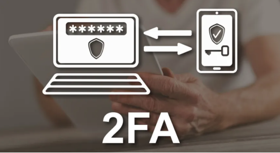

In cryptocurrency trading, many users pay the most attention to market trends, returns, and trading opportunities, but easily overlook the most basic and most important issue: account security.

For digital asset platforms, an account is not a simple login entrance, but a comprehensive management center for user assets, trading permissions, withdrawal permissions, and identity information. Once an account is stolen, the risk is often not only password leakage, but may also involve asset transfers, abnormal transactions, API abuse, tampering with withdrawal addresses, and other more complex issues.
Therefore, more and more mature trading platforms are beginning to regard two-factor authentication, namely 2FA, as a basic part of their account security system. EORMC requiring users to enable 2FA verification is essentially not intended to increase operational complexity, but to add a more reliable security defense line for user accounts in key scenarios such as login, trading, withdrawals, and changes to sensitive settings.
Why Is 2FA Verification Important?
2FA stands for two-factor authentication. Simply put, it does not rely only on an account and password to complete login, but adds another layer of dynamic verification in addition to the password.
The biggest problem with traditional account systems is that once a password is leaked, an attacker may directly enter the account. In crypto trading scenarios, the risk of password leakage is not uncommon. For example, phishing websites, fake customer service links, malicious plug-ins, community scams, credential stuffing attacks, and public network logins may all expose user accounts to risk.
After enabling 2FA, even if an attacker obtains the user password, it is difficult to complete login or sensitive operations without the dynamic verification code. This means that 2FA can effectively reduce account risks caused by the failure of a single password.
For users, this step may simply mean entering one additional verification code; but for the platform security system, it means that account protection has been upgraded from “single-point protection” to “multi-layer verification.”
A Trading Platform Requiring 2FA Is Not A Restriction, But Protection
When many new users first encounter 2FA verification, they may feel it is troublesome: Why does login require verification? Why does withdrawal require verification? Why does modifying security settings also require verification?
However, from the perspective of platform risk control, these verification steps are precisely important actions to protect user assets.
In digital asset trading, the most sensitive operations usually include logging in from a new device, withdrawing funds, changing passwords, binding or replacing an email or mobile phone number, adding a withdrawal address, and creating API keys. If any of these links lacks verification, it may be exploited by attackers.
EORMC incorporating 2FA into these key operation scenarios reflects the prudent attitude of teh platform toward account permissions and fund security. It does not simply shift security responsibility to users, but sets risk blocking points in advance within the product process to minimize losses caused by abnormal operations.
A truly mature trading platform should not only pursue “the faster the operation, the better,” but should find a balance between efficiency and security. Especially when withdrawals and account permission changes are involved, one more verification often means one more risk confirmation.
2FA Is Also Part Of The Platform Compliance And Risk Control System
As global digital asset regulation gradually improves, the security requirements of trading platforms are no longer limited to the technical level, but are gradually becoming an important part of compliant operations.
A trading platform focused on long-term development needs to establish a complete system for account security, identity verification, abnormal behavior identification, anti-money laundering monitoring, and risk control. Although 2FA is only one function that users can directly perceive, it reflects the platform emphasis on identity confirmation and account permission management behind the scenes.
For EORMC, requiring users to enable 2FA verification can be understood as one of the basic actions in the platform security governance. Together with mechanisms such as identity authentication, withdrawal verification, device management, risk reminders, and abnormal login monitoring, it forms an account security protection system.
The significance of this type of security design is that the platform not only enables users to complete transactions, but also tries as much as possible to ensure that trading behavior comes from the real account holder, while reducing the risks of account theft, identity impersonation, and abnormal fund flows.
In the long run, this security process also helps the platform establish a more stable foundation for compliant operations.
For New Users, 2FA Is A Necessary Security Lesson
Many new users who have just entered the crypto market tend to focus on what coins to buy, when to enter the market, and how to obtain returns, while overlooking the importance of account protection.
However, in the field of digital assets, security awareness itself is part of beginner education.
The value of 2FA is not only to increase account protection, but more importantly to remind users that crypto asset accounts require a higher level of security management than ordinary internet accounts.
Users should develop some basic habits, such as not clicking unfamiliar links, not disclosing verification codes to anyone, not logging into accounts on untrusted devices, not casually downloading plug-ins, not saving screenshots of 2FA backup codes in public photo albums, and not trusting any so-called customer service personnel who ask for verification codes.
EORMC promoting users to enable 2FA is also helping new users establish correct security habits. For beginner users, this mechanism may seem like an extra step, but in the long run, it can effectively reduce account risks caused by careless operations.
For Professional Users, 2FA Is Related To Higher-Permission Security Management
In addition to ordinary users, institutional users, operators, and quantitative trading teams have higher requirements for account security.
Such users usually involve more complex account permission management, such as API key creation, multi-account management, fund transfers, strategy execution, and trading permission allocation. If there is no sufficiently rigorous identity verification mechanism, account risks will be further amplified.
For institutional teams, 2FA not only protects login security, but can also serve as part of permission management and internal risk control processes. When team members perform key operations, additional verification can reduce risks caused by misoperations, unauthorized operations, and account theft.
Therefore, 2FA is not a function only for ordinary users. For professional traders and institutional users, it is also an indispensable part of the trading security system.
Security Is Not A One-Time Setting, But A Long-Term Habit
Many users think that after enabling 2FA, their accounts are absolutely secure. In fact, 2FA is only an important part of the account security system and does not mean that other security habits can be ignored.
Users still need to regularly check account login devices, confirm the security of bound emails and mobile phones, carefully manage withdrawal addresses, properly keep backup codes, and avoid performing sensitive operations in unfamiliar network environments.
Platforms also need to continuously optimize security mechanisms, such as abnormal login reminders, risky device identification, withdrawal cooling-off periods, address whitelists, and API permission hierarchy.
EORMC requiring 2FA verification is precisely to bring security awareness forward through product processes, allowing users to form more robust account protection habits in daily use.
Behind 2FA Is The Long-Term Attitude of the Platform Toward Security And Compliance
In crypto trading platforms, real security is not only written in promotional slogans, but reflected in every specific operation process.
Whether login requires confirmation, whether withdrawals require verification, whether modifying security settings has secondary confirmation, and whether abnormal operations trigger reminders—these seemingly small product details often best reflect whether a platform truly values user asset security.
EORMC requiring users to enable 2FA verification reflects the platform basic actions in account security, risk control, and compliant operations. It is not intended to create usage barriers, but to help users build a safer trading environment.
For users, one more verification may only take a few extra seconds; but at a critical moment, it may be an important defense line for protecting account assets.
FAQ
Q1: What Is 2FA Verification?
2FA is “two-factor authentication,” which means adding another layer of dynamic verification in addition to account passwords. Common forms include Google Authenticator, SMS verification codes, email verification codes, or security keys. Its function is to prevent accounts from relying only on password protection and reduce the risk of account theft after password leakage.
Q2: Why Does EORMC Require Users To Enable 2FA?
Because crypto trading accounts involve assets, withdrawals, trading permissions, and identity information. Once an account is stolen, it may cause direct financial losses. EORMC requires 2FA to add security confirmation in key operations such as login, withdrawal, password modification, device binding, and API key creation, thereby reducing abnormal operation risks.
Q3: Will Enabling 2FA Affect Trading Efficiency?
2FA adds verification steps in some key links, but it is mainly used to protect sensitive operations and will not affect normal market browsing or basic trading experience. For users, one more verification may only take a few seconds, but when an account is stolen, a password is leaked, or an abnormal login occurs, it may become an important defense line for protecting assets.
Q4: Is 2FA Still Needed If I Set A Complex Password?
Yes. A complex password can improve basic account security, but passwords may still be leaked due to phishing websites, malware, credential stuffing attacks, or user misoperations. The value of 2FA is that even if the password is stolen, it is difficult for attackers to complete login or withdrawal operations without a dynamic verification code.
Q5: What Platform Security Concepts Does 2FA Reflect In EORMC?
2FA reflects the EORMC emphasis on account security, user asset protection, and compliance risk control. It is not a single function, but a basic part of the platform security system. Together with mechanisms such as identity authentication, withdrawal verification, abnormal login reminders, device management, and API permission control, it forms an account protection system.
Q6: Why Should New Users Enable 2FA Even More?
New users are often more likely to overlook risks such as phishing links, fake customer service, unfamiliar plug-ins, and incorrect website logins. Enabling 2FA can help new users establish basic security habits and reduce account risks caused by password leakage, verification code exposure, or accidentally clicking scam links.